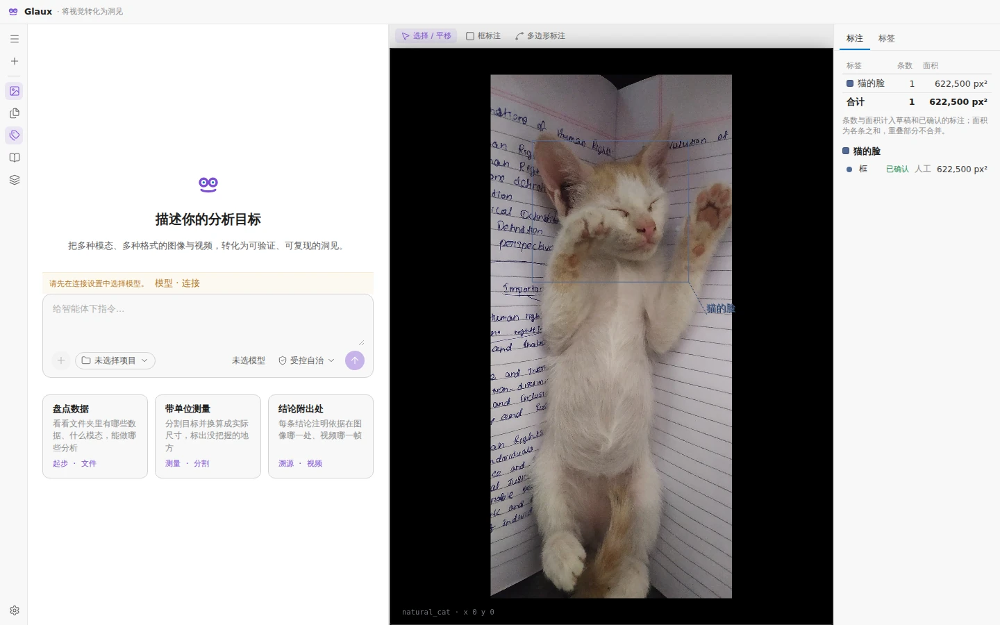
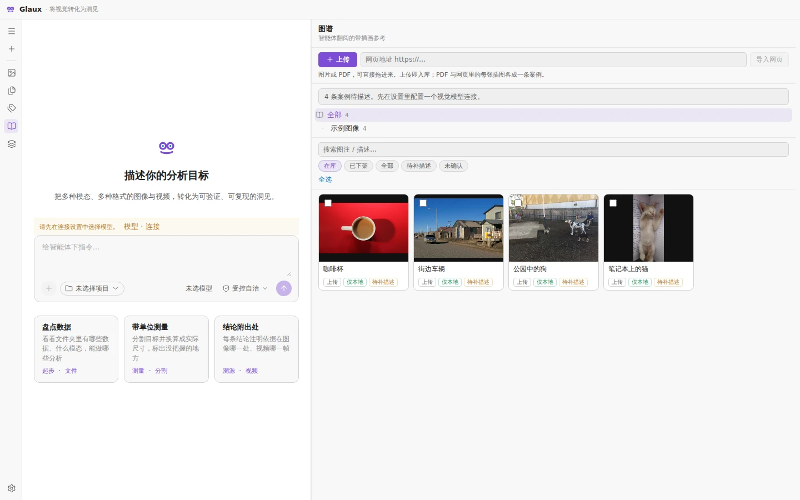
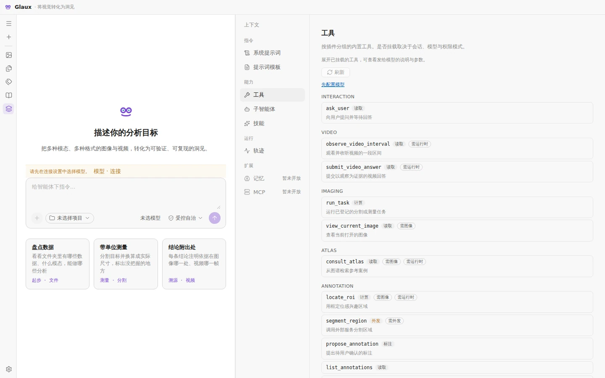

查看图像与视频
打开本机文件、浏览视频帧，并为模型提供视觉上下文。视频问题可以附带与时间点对齐的画面和音频证据。
Glaux 为你的 AI 模型提供工作区，帮助它查看图像和视频、调用分析工具，并展示每个结果背后的证据。
运行在你的电脑上 · 模型由你接入 · Apache-2.0
在同一个本机环境中查看图像或视频、调用分析工具，并复核结果的生成过程。
打开本机文件、浏览视频帧，并为模型提供视觉上下文。视频问题可以附带与时间点对齐的画面和音频证据。

绘制和编辑图像标注。智能体提出的建议可以逐项复核，并查看对应的图像区域。

整理图像、参考资料、描述和区域，让智能体在后续工作中查询经过策展的案例。

查看智能体可用的工具、技能与子智能体，逐轮复核请求上下文、模型调用和工具执行。
选择操作系统并复制一条命令。安装程序会校验下载包、准备独立运行环境，并在浏览器中打开 Glaux。
需要指定版本或离线安装？安装手册列出了系统要求和可选项。
curl -fsSL https://zhentai-sn.github.io/open-glaux/install.sh | shGlaux 在本机运行界面和分析服务。你可以选择模型服务，以及要发送给它的提示词或媒体。
模型负责推理，Glaux 提供推理所需的环境。
读取媒体及其模态、尺度、通道、帧和时间信息。
使用标注、分割、测量等分析工具。
将结果追溯到源区域，并与其他方法对照复核。
保留可供后续工作复用的步骤、修正和案例。
不需要。安装程序会把 Glaux 需要的 Node.js、uv 和 Python 放在应用目录内，不需要管理员权限。
不自带模型。你需要连接自选的模型服务商，价格和服务条款由服务商决定。专用模型权重在需要时另行安装。
默认位于 macOS 和 Linux 的 ~/.glaux，或 Windows 的 %USERPROFILE%\.glaux。更新或卸载程序时会保留该目录，除非你明确选择清除。
运行 glaux uninstall 卸载程序并保留数据。运行 glaux uninstall --purge 可同时清除数据。
不可以。生物医学功能仅供研究使用，不用于临床诊断。